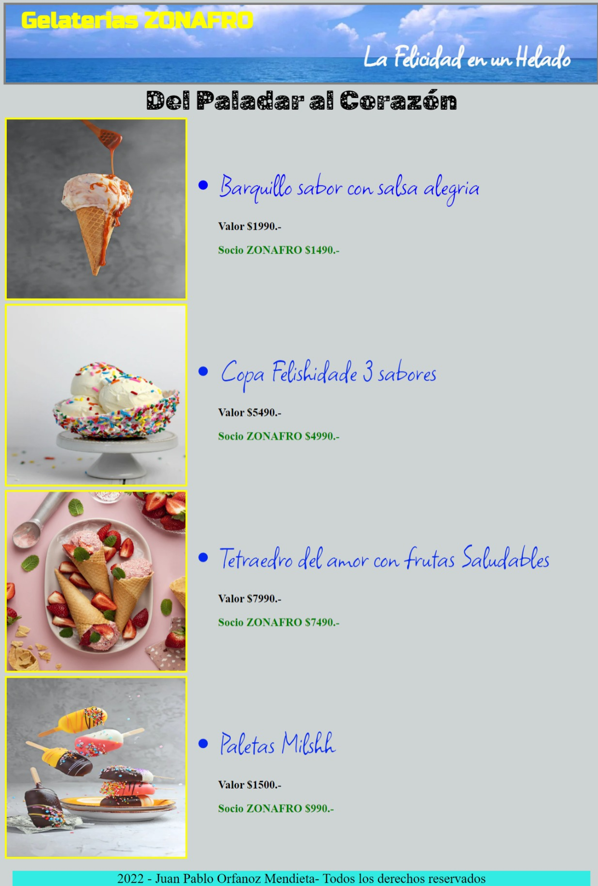
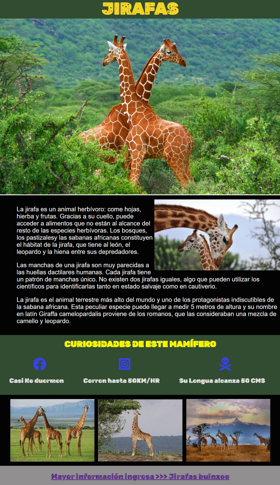
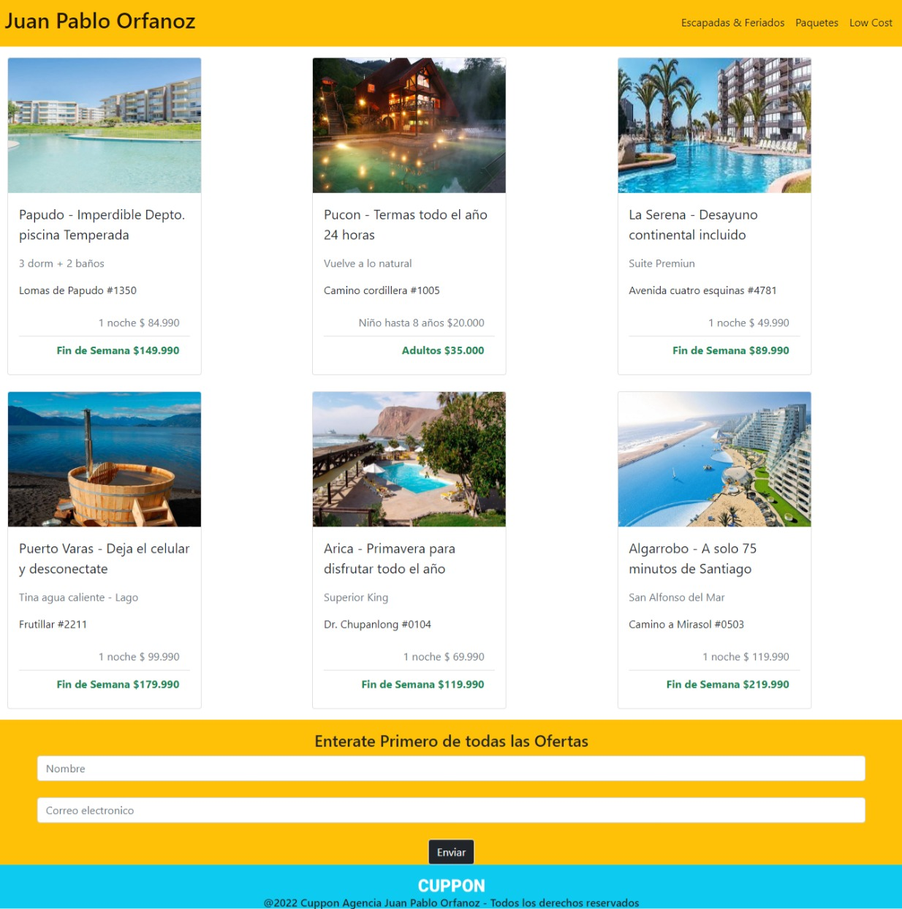
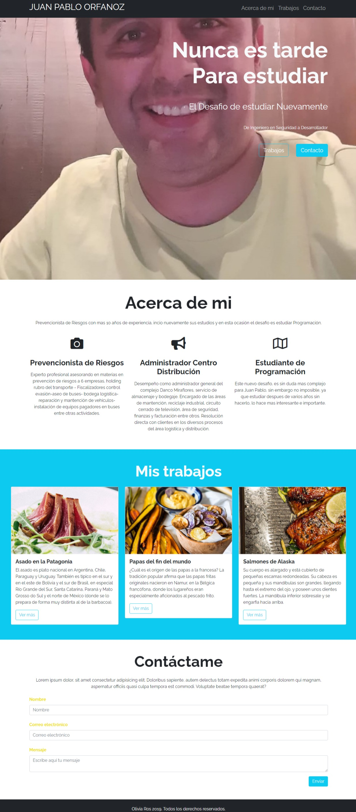

Primer Desafio A continuación, puedes revisar mi primer desafio el cual contemplaba crear un CV en HTML, utilizando la estructura básica de HTML y todas las etiquetas que aprendimos en la primera clase con el profe Ignacio el tutor Francisco.
Ingresa al CV en Html

Segundo Desafio En esta oportunidad empece a conocer CSS para darle estilo a lo construido en Html. Aprendi a usar colores, bordes, margen y padding entre otros. Ya solte la mano con Html, por lo tanto cree mi primer Landing Page de una Heladeria, aparte de aprender cosas nuevas en Desafio Latam, también empece a innovar en mis proyectos para generar mayor creatividad.
Conoce la mejor Heladeria de Santiago aqui en ZONAFRO

Tercer Desafio En lenguaje coloquial "Ignacio tiro toda la carne a la parrilla", esta clase tuvo muchisima materia en un solo dia para un desafio que a simple vista se veia facil de realizar, sin embargo creo que el Posicionamiento en CSS es una de las tareas que mayor tiempo requiere. Todo se descuadra, se desborda, las imagenes son un dolor de cabeza al intentar darle su tamaño ideal y definitivamente hay que tener una basta experiencia para terminar un proyecto de este tipo en corto plazo. La creatividad es importante para mi cuando estoy aprendiendo, por lo cual el mamifero mas alto del mundo es el protagonista de este Page.
Entra a JIRAFILANDIA

Cuarto Desafio Aprendiendo bootstrap en esta clase, me di cuenta que es mas amigable y facilita mas las cosas al momento de ver todas las dunciones y opciones en esta materia. Este desafio especie de cupponatic, lo innove a mi estilo con Vacaciones, que es lo que muchos comenzamos a pensar en esta etapa del año y a otros como a mi ya me hacen falta...
Te invito a unas proximas Vacaciones en CHILE

Quinto Desafio En esta clase y tutoria aprendi lo que es GIT y GITHUB, me parecio bastante interesante y positivo para ser una herramienta gratuita, aun tengo dudas que en función del tiempo voy resolviendo con videos en youtube o en tutoria. Este desafio me parecio mas facil ya que fue una introducción y solo habia que realizar commit y forkear un proyecto.
Hecha un vistazo a mi GITHUB